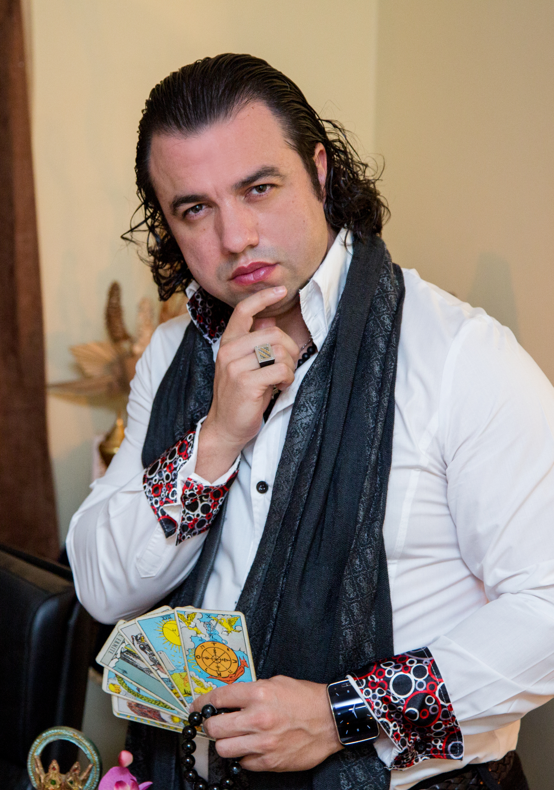

Mestre AlbertoGenialtarot com o Mestre Alberto — leia o que as cartas têm para lhe dizer
Leituras simples, simbólicas e realistas — sem promessas mágicas, apenas orientação.
Como funciona o Genialtarot
Porquê confiar no Genialtarot
O Genialtarot usa o baralho clássico Rider Waite, um dos mais conhecidos e estudados no mundo esotérico, com 78 cartas cheias de símbolos e arquétipos ricos.
Escolhe a área que queres trabalhar
Cada tiragem foca-se numa área específica da tua vida. Pode voltar quando quiser e explorar temas diferentes.
Envolva-se no ambiente esotérico
Ative o som ambiente para entrar ainda mais na energia da leitura: uma paisagem sonora suave, mística e envolvente acompanha a sua tiragem.
Se preferir silêncio, pode desligar o som a qualquer momento com um simples clique.
A Mesa Esotérica do Mestre Alberto
Partilhe um pouco sobre si, escolha a sua área e deixe as cartas virarem-se.
Os seus dados são usados apenas para registar a sua leitura.
As cartas estão a virar-se…
0 de 8 reveladas
Queres uma consulta pessoal?
Fale diretamente com o Mestre Alberto pelo WhatsApp e agende a sua consulta privada. Uma conversa pessoal, atenta e dedicada só a si.
Clique no botão e envie já a sua mensagem — o Mestre Alberto está à sua espera.
Falar no WhatsApp com Mestre Alberto+351 914 920 427 · Resposta personalizada